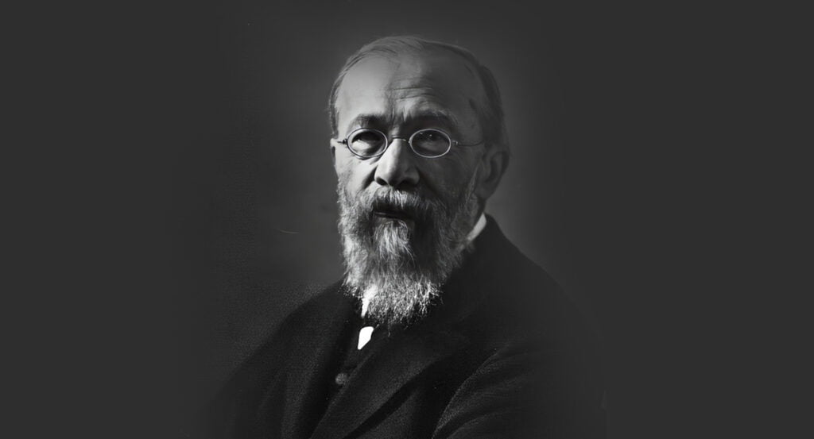
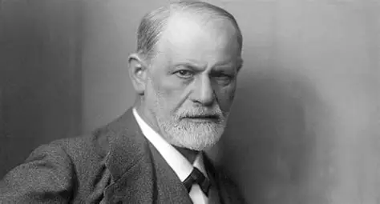
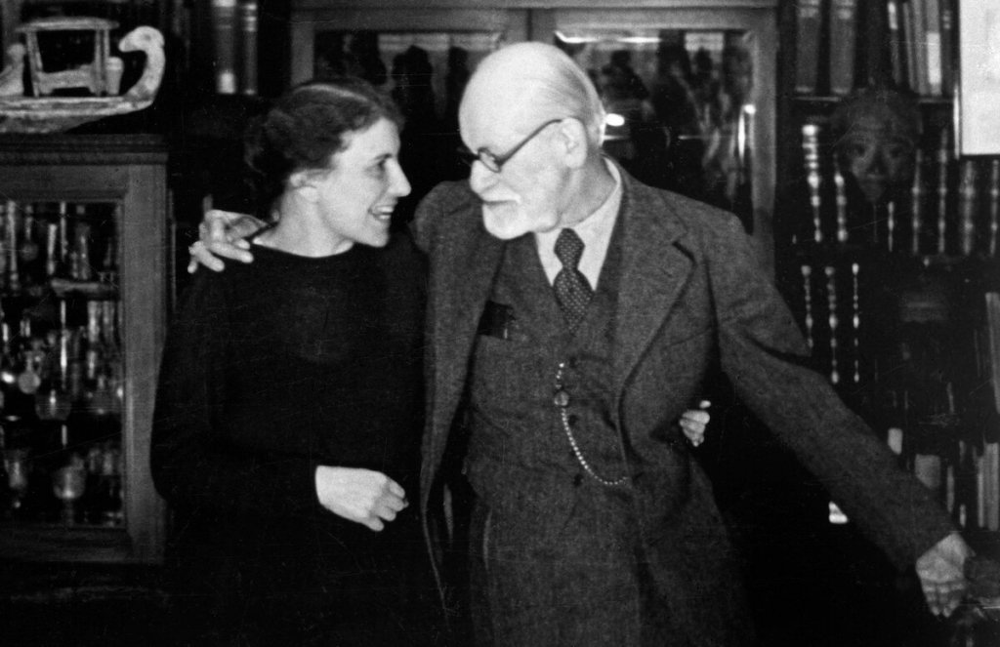
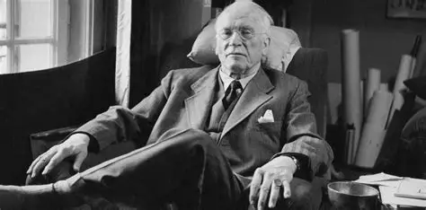
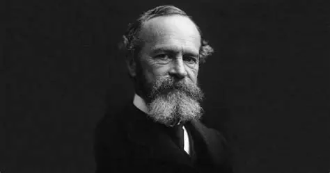
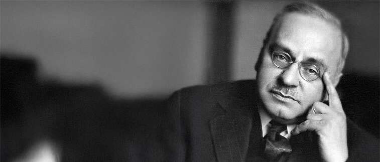
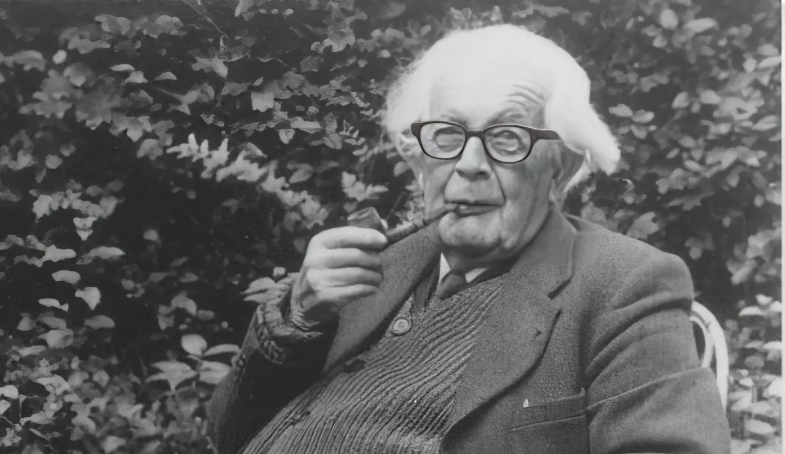
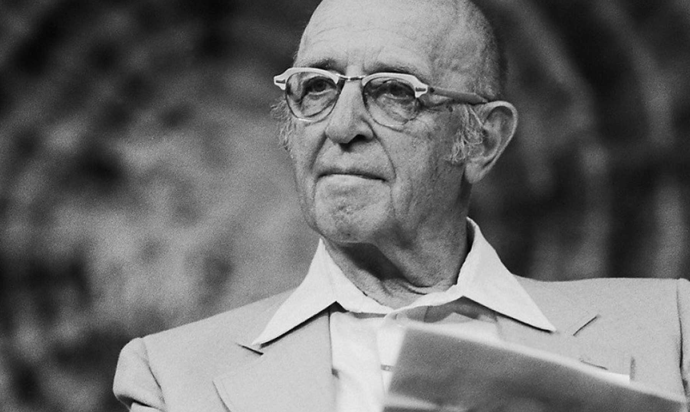
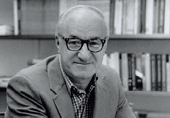

19th and 20th Century's Most Famous Psychologists in the World:

Wilhelm Wundt : Father of Psychology
Wilhelm Wundt opened the Institute for Experimental Psychology at the University of Leipzig in Germany in 1879.
This was the first laboratory dedicated to psychology, and its opening is usually thought of as the beginning of modern psychology. Indeed, Wundt is often regarded as the father of psychology.
Wundt was important because he separated psychology from philosophy by analyzing the workings of the mind in a more structured way, with the emphasis being on objective measurement and control.
This laboratory became a focus for those with a serious interest in psychology, first for German philosophers and psychology students, then for American and British students as well.
Wundt’s aim was to record thoughts and sensations, and to analyze them into their constituent elements, in much the same way as a chemist analyses chemical compounds, in order to get at the underlying structure.
During his academic career Wundt trained 186 graduate students (116 in psychology). This is significant as it helped disseminate his work.
Indeed, parts of Wundt’s theory were developed and promoted by his one-time student, Edward Titchener, who described his system as Structuralism, or the analysis of the basic elements that constitute the mind.
Wundt believed in reductionism. That is, he believed consciousness could be broken down (or reduced) to its basic elements without sacrificing any of the properties of the whole.
Wundt argued that conscious mental states could be scientifically studied using introspection. Wundt’s introspection was not a casual affair, but a highly practiced form of self-examination.
Wundt’s method of introspection did not remain a fundamental tool of psychological experimentation past the early 1920″s. His greatest contribution was to show that psychology could be a valid experimental science .
On the basis of his work, and the influence it had on psychologists who were to follow him, Wundt can be regarded as the founder of experimental psychology, so securing his place in the history of psychology.
At the same time, Wundt himself believed that the experimental approach was limited in scope, and that other methods would be necessary if all aspects of human psychology were to be investigated.

Sigmund Freud
Sigmund Freud[a] (born Sigismund Schlomo Freud; 6 May 1856 – 23 September 1939) was an Austrian neurologist and the founder of psychoanalysis, a clinical method for evaluating and treating pathologies arising from conflicts in the psyche through dialogue between patient and psychoanalyst, and the distinctive theory of mind and human agency derived from it.
In creating psychoanalysis Freud introduced therapeutic methods such as free association, the interpretation of dreams, and the analysis of transference phenomena that arise in the clinical setting. Freud's redefinition of sexuality to include infantile stages led him to formulate the Oedipus complex as the central tenet of psychoanalytical theory.
His analysis of dreams as wish fulfillments provided him with models for the clinical analysis of symptom formation and the underlying mechanisms of repression. Accordingly, on this basis, Freud elaborated his theory of the unconscious and went on to develop a model of psychic structure comprising id, ego, and superego (a tripartite model of the mind).
Freud postulated the existence of libido (sexualised psychic energy), with which mental processes and structures are invested and that generates erotic attachments and a death drive, the source of compulsive repetition, hate, aggression, and neurotic guilt.
In 1859, the Freud family left Freiberg. Freud's half-brothers immigrated to Manchester, England, parting him from the "inseparable" playmate of his early childhood, Emanuel's son, John. Jakob Freud took his wife and two children (Freud's sister, Anna, was born in 1858; a brother, Julius born in 1857, had died in infancy) firstly to Leipzig and then in 1860 to Vienna where four sisters and a brother were born: Rosa (b. 1860), Marie (b. 1861), Adolfine (b. 1862), Paula (b. 1864), Alexander (b. 1866). In 1865, the nine-year-old Freud entered the Leopoldstädter Kommunal-Realgymnasium, a prominent high school. He proved to be an outstanding pupil and graduated from the Matura in 1873 with honors.
He loved literature and was proficient in German, French, Italian, Spanish, English, Hebrew, Latin and Greek.
Freud entered the University of Vienna at age 17. He had planned to study law, but joined the medical faculty at the university, where his studies included philosophy under Franz Brentano, physiology under Ernst Brücke, and zoology under Darwinist professor Carl Claus. In 1876, Freud spent four weeks at Claus's zoological research station in Trieste, dissecting hundreds of eels in an inconclusive search for their male reproductive organs.
In 1882, Freud began his medical career at Vienna General Hospital. His research work in cerebral anatomy led to the publication in 1884 of an influential paper on the palliative effects of cocaine, and his work on aphasia would form the basis of his first book On Aphasia: A Critical Study, published in 1891
Over three years, Freud worked in various departments of the hospital. His time spent in Theodor Meynert's psychiatric clinic and as a locum in a local asylum led to an increased interest in clinical work. His substantial body of published research led to his appointment as a university lecturer or docent in neuropathology in 1885, a non-salaried post but one that entitled him to give lectures at the University of Vienna.
In 1886, Freud resigned his hospital post and entered private practice, specializing in "nervous disorders". The same year, he married Martha Bernays, the granddaughter of Isaac Bernays, a chief rabbi in Hamburg. Freud was, as an atheist, dismayed at the requirement in Austria for a Jewish religious ceremony and briefly considered, before dismissing, the prospect of joining the Protestant 'Confession' to avoid one.

Anna Freud
Anna Freud CBE Austrian German: [ˈana ˈfrɔʏd]; (3 December 1895 – 9 October 1982) was a British psychoanalyst of Austrian Jewish descent. She was born in Vienna, the sixth and youngest child of Sigmund Freud and Martha Bernays.
She followed the path of her father and contributed to the field of psychoanalysis. Alongside Hermine Hug-Hellmuth and Melanie Klein, she may be considered the founder of psychoanalytic child psychology.
Compared to her father, her work emphasized the importance of the ego and its normal "developmental lines" as well as incorporating a distinctive emphasis on collaborative work across a range of analytical and observational contexts.
After the Freud family were forced to leave Vienna in 1938 with the advent of the Nazi regime in Austria, she resumed her psychoanalytic practice and her pioneering work in child psychoanalysis in London, establishing the Hampstead Child Therapy Course and Clinic in 1952 (later renamed the Anna Freud National Centre for Children and Families) as a centre for therapy, training and research work.
Anna Freud was born in Vienna, Austria-Hungary, on 3 December 1895. She was the youngest daughter of Sigmund Freud and Martha Bernays.[5] She grew up in "comfortable bourgeois circumstances.
Anna Freud appears to have had a comparatively unhappy childhood, in which she "never made a close or pleasurable relationship with her mother, and was instead nurtured by their Catholic nurse Josephine".
She found it particularly difficult to get along with her eldest sister, Sophie; "the two young Freuds developed their version of a common sisterly division of territories, 'beauty' and 'brains', and their father once spoke of her "age-old jealousy of Sophie."
As well as this rivalry between the two sisters, Anna had become "a somewhat troubled youngster who complained to her father in candid letters how all sorts of unreasonable thoughts and feelings plagued her". According to Young-Bruehl, Anna's communications imply a persistent, emotionally-caused cognitive disturbance, and perhaps a mild eating disorder.
The close relationship between Anna and her father was different from the rest of her family. She was a lively child with a reputation for mischief. Freud wrote to his friend Wilhelm Fliess in 1899: "Anna has become downright beautiful through naughtiness." In adolescence, she took a precocious interest in her father's work and was allowed to sit in on the meetings of the newly established Vienna Psychoanalytical Society, which Freud convened at his home.

Carl Gustav Jung
Carl Gustav Jung (/jʊŋ/ YUUNG; Swiss Standard German: [karl jʊŋ]; 26 July 1875 – 6 June 1961) was a Swiss psychiatrist, psychotherapist, and psychologist who founded the school of analytical psychology.
He was a prolific author of over twenty books, illustrator, and correspondent, and academic, best known for his concept of archetypes. Widely considered one of the most influential psychologists of the early 20th century, and of all time, Jung's work has fostered not only scholarship, but also popular interest.
His work has been influential in the fields of psychiatry, anthropology, archaeology, literature, philosophy, psychology,[9] and religious studies.
Jung worked as a research scientist at the Burghölzli psychiatric hospital in Zurich, under Eugen Bleuler.
He established himself as an influential mind, developing a friendship with Freud, founder of psychoanalysis, and conducting a lengthy correspondence regarding their joint vision of human psychology. Freud saw the younger Jung not only as the heir he had been seeking to take forward his "new science" of psychoanalysis, but as a means to legitimise his own work: Freud and other contemporary psychoanalysts were Jews facing rising antisemitism in Europe, while Jung was raised as Christian, although he did not strictly adhere to traditional Christian doctrine, seeing religion, including Christianity, as a powerful expression of the human psyche and its search for meaning.
Freud secured Jung's appointment as president of Freud's newly founded International Psychoanalytical Association. Jung's research and personal vision, however, made it difficult to follow his older colleague's doctrine, and they parted ways. This division was painful for Jung and resulted in the establishment of Jung's analytical psychology, as a comprehensive system separate from psychoanalysis.
Among the central concepts of analytical psychology is individuation—the lifelong psychological process of differentiation of the self out of each individual's conscious and unconscious elements. Jung considered it to be the main task of human development. He created some of the best-known psychological concepts, including synchronicity, archetypal phenomena, the collective unconscious, the psychological complex, and extraversion and introversion.
His treatment of American businessman and politician Rowland Hazard in 1926 with his conviction that alcoholics may recover if they have a "vital spiritual (or religious) experience" played a crucial role in the chain of events that led to the formation of Alcoholics Anonymous.
Carl Gustav Jung was born 26 July 1875 in Kesswil, in the Swiss canton of Thurgau, as the first surviving son of Paul Achilles Jung (1842–1896) and Emilie Jung (née Preiswerk) (1848–1923). His birth was preceded by two stillbirths and that of a son named Paul, born in 1873, who survived only a few days.
Paul Jung, Carl's father, was the youngest son of a noted German-Swiss physician and professor of medicine at Basel, Karl Gustav Jung (1794–1864).: 8-13 : 2 Karl Jung became Rector of Basel University and Master of the Swiss Lodge of Freemasons. It was rumoured that he was the illegitimate son of Goethe, but this is likely a legend. Paul Jung was a rural pastor in the Swiss Reformed Church.

William James : Father Of American Psychology
William James (January 11, 1842 – August 26, 1910) was an American philosopher and psychologist. The first educator to offer a psychology course in the United States, he is considered to be one of the leading thinkers of the late 19th century, one of the most influential philosophers and is often dubbed the "father of American psychology."
A Review of General Psychology analysis, published in 2002, ranked James as the 14th most eminent psychologist of the 20th century. A survey published in American Psychologist in 1991 ranked James's reputation in second place, after Wilhelm Wundt, who is widely regarded as the founder of experimental psychology.
In an empirical study by Haggbloom et al. using six criteria such as citations and recognition, James was found to be the 14th most eminent psychologist of the 20th century.
James wrote widely on many topics, including epistemology, education, metaphysics, psychology, religion, and mysticism.
Among his most influential books are The Principles of Psychology, a groundbreaking text in the field of psychology; Essays in Radical Empiricism, an important text in philosophy; and The Varieties of Religious Experience, an investigation of different forms of religious experience, including theories on mind-cure.
Along with Charles Sanders Peirce, James established the philosophical school known as pragmatism, and is also cited as one of the founders of functional psychology. James also developed the philosophical perspective known as radical empiricism. James's work has influenced philosophers and academics such as Alan Watts, W. E. B. Du Bois, Edmund Husserl, Bertrand Russell, Ludwig Wittgenstein, Hilary Putnam, and Richard Rorty.
William James was born at the Astor House in New York City on January 11, 1842. He was the son of Henry James Sr., an independently wealthy Swedenborgian theologian well-acquainted with the literary and intellectual elites of his day, and Mary Robertson Walsh. He had four siblings: Henry (the novelist), Garth Wilkinson, Robertson, and Alice (diarist)
James received an eclectic and transatlantic education, where he developed fluency in both German and French. The family made two trips to Europe while James was still a child, setting a pattern that resulted in thirteen more European journeys during his life. His education encouraged cosmopolitanism.
Initially, James wished to pursue painting, which led him to pursue an apprenticeship in the studio of William Morris Hunt in Newport, Rhode Island. However, his father urged him to become a physician instead. In response, James said that he wanted to specialize in physiology.
However, once he figured this was also not what he wanted to do, he announced he was going to specialize in the nervous system and psychology. In 1861, James then switched to scientific studies at the Lawrence Scientific School of Harvard College.

Alfred Adler
Alfred Adler (/ˈædlər/ AD-lər; Austrian German: [ˈalfreːd ˈaːdlɐ]; 7 February 1870 – 28 May 1937) was an Austrian medical doctor, psychotherapist, and founder of the school of individual psychology.
His emphasis on the importance of feelings of belonging, relationships within the family, and birth order set him apart from Freud and others in their common circle. He proposed that contributing to others (social interest or Gemeinschaftsgefühl) was how the individual feels a sense of worth and belonging in the family and society.
His earlier work focused on inferiority, coining the term inferiority complex, an isolating element which he argued plays a key role in personality development. Alfred Adler considered a human being as an individual whole, and therefore he called his school of psychology "individual psychology".
Adler was the first to emphasize the importance of the social element in the re-adjustment process of the individual and to carry psychiatry into the community. A Review of General Psychology survey, published in 2002, ranked Adler as the 67th most eminent psychologist of the 20th century
Adler was born on February 7, 1870 at Mariahilfer Straße 208 in Rudolfsheim, a village on the western fringes of Vienna, a modern part of Rudolfsheim-Fünfhaus, the 15th district of the city. He was second of the seven children of a Jewish couple, Pauline (Beer) and Leopold Adler.
Leopold Adler was a Hungarian-born grain merchant. Alfred's younger brother died in the bed next to him when Alfred was only three years old, and throughout his childhood, he maintained a rivalry with his older brother. This rivalry was spurred on because Adler believed his mother preferred his brother over him. Despite his good relationship with his father, he still struggled with feelings of inferiority in his relationship with his mother.
Alfred was an active, popular child and an average student who was also known for the competitive attitude toward his older brother, Sigmund. Early on, he developed rickets, which kept Alfred from walking until he was four years old.
At the age of four, he developed pneumonia and heard a doctor say to his father, "Your boy is lost". Along with being run over twice and witnessing his younger brother's death, this sickness contributed to his overall fear of death.
At that point, he decided to be a physician. He was very interested in the subjects of psychology, sociology and philosophy. After studying at the University of Vienna, he specialized as an eye doctor, and later in neurology and psychiatry.
20th Century's Most Famous Psychologists in the World :
Burrhus Frederic Skinner
Burrhus Frederic Skinner (March 20, 1904 – August 18, 1990) was an American psychologist, behaviorist, inventor, and social philosopher. He was the Edgar Pierce Professor of Psychology at Harvard University from 1948 until his retirement in 1974.
Skinner developed behavior analysis, especially the philosophy of radical behaviorism, and founded the experimental analysis of behavior, a school of experimental research psychology. He also used operant conditioning to strengthen behavior, considering the rate of response to be the most effective measure of response strength.
To study operant conditioning, he invented the operant conditioning chamber (aka the Skinner box),[8] and to measure rate he invented the cumulative recorder. Using these tools, he and Charles Ferster produced Skinner's most influential experimental work, outlined in their 1957 book Schedules of Reinforcement.
Skinner was a prolific author, publishing 21 books and 180 articles.[11] He imagined the application of his ideas to the design of a human community in his 1948 utopian novel, Walden Two, while his analysis of human behavior culminated in his 1958 work, Verbal Behavior.
Skinner, John B. Watson and Ivan Pavlov, are considered to be the pioneers of modern behaviorism. Accordingly, a June 2002 survey listed Skinner as the most influential psychologist of the 20th century.
Skinner was born in Susquehanna, Pennsylvania, to Grace and William Skinner, the latter of whom was a lawyer. Skinner became an atheist after a Christian teacher tried to assuage his fear of the hell that his grandmother described. His brother Edward, two and a half years younger, died at age 16 of a cerebral hemorrhage
Skinner's closest friend as a young boy was Raphael Miller, whom he called Doc because his father was a doctor. Doc and Skinner became friends due to their parents' religiousness and both had an interest in contraptions and gadgets. They had set up a telegraph line between their houses to send messages to each other, although they had to call each other on the telephone due to the confusing messages sent back and forth.
During one summer, Doc and Skinner started an elderberry business to gather berries and sell them door to door. They found that when they picked the ripe berries, the unripe ones came off the branches too, so they built a device that was able to separate them. The device was a bent piece of metal to form a trough.
Skinner attended Hamilton College in Clinton, New York, with the intention of becoming a writer. He found himself at a social disadvantage at the college because of his intellectual attitude.[further explanation needed] He was a member of Lambda Chi Alpha fraternity.

Jean William Fritz Piaget
Jean William Fritz Piaget was born on August 9, 1896, in Neuchâtel, Switzerland and showed an early interest in biology, publishing his first scientific paper on an albino sparrow at age 10 and later several works on mollusks, which earned him recognition among European zoologists.
He studied zoology and philosophy at the University of Neuchâtel, earning a doctorate in zoology in 1918, before turning his focus to psychology, combining his biological background with epistemology. Piaget studied under Carl Jung and Eugen Bleuler in Zürich and later at the Sorbonne in Paris, where he developed an interest in children’s reasoning and learning processes.
Piaget served as director of studies at the Jean-Jacques Rousseau Institute in Geneva and held professorships at the University of Neuchâtel, University of Geneva, University of Lausanne, and the Sorbonne. In 1955, he founded the International Center for Genetic Epistemology in Geneva, directing it until his death in 1980. His work emphasized the importance of education, asserting that it is crucial for societal development.
Theory of Cognitive Development :
Piaget’s cognitive development theory describes how children construct knowledge through interaction with their environment, progressing through four stages:
Sensorimotor Stage (0–2 years):
Infants learn through sensory experiences and motor actions, developing object permanence, the understanding that objects exist even when unseen.
Preoperational Stage (2–7 years):
Children begin using symbols and language but struggle with logic and conservation; they often display egocentrism, finding it difficult to see perspectives other than their own.
Concrete Operational Stage (7–11 years):
Logical thinking emerges; children understand conservation, can classify objects, and mentally reverse actions.
Formal Operational Stage (12 years and up):
Adolescents develop abstract reasoning, hypothetical thinking, and systematic problem-solving abilities.
Piaget emphasized that children actively construct knowledge, modifying their mental schemas through assimilation and accommodation as they interact with their environment. His approach, known as constructivism, has profoundly influenced education, particularly early childhood learning strategies.
When he was 15, his former nanny wrote to his parents to apologize for having once lied to them about fighting off a would-be kidnapper from baby Jean's pram. There never was a kidnapper. Piaget became fascinated that he had somehow formed a memory of this kidnapping incident, a memory that endured even after he understood it to be false.
He developed an interest in epistemology due to his godfather's urgings to study the fields of philosophy and logic. He was educated at the University of Neuchâtel, and studied briefly at the University of Zürich. During this time, he published two philosophical papers that showed the direction of his thinking at the time, but which he later dismissed as adolescent thought.
Piaget moved from Switzerland to Paris after his graduation and he taught at the Grange-Aux-Belles Street School for Boys. The school was run by Alfred Binet, the developer of the Binet-Simon test (later revised by Lewis Terman to become the Stanford–Binet Intelligence Scales).
Piaget assisted in the marking of Binet's intelligence tests. It was while he was helping to mark some of these tests that Piaget noticed that young children consistently gave wrong answers to certain questions.[20] Piaget did not focus so much on the fact of the children's answers being wrong, but that young children consistently made types of mistakes that older children and adults managed to avoid. This led him to the theory that young children's cognitive processes are inherently different from those of adults.

Carl Ransom Rogers
Carl Ransom Rogers (January 8, 1902 – February 4, 1987) was an American psychologist who was one of the founders of humanistic psychology and was known especially for his person-centered psychotherapy.
Rogers is widely considered one of the founding fathers of psychotherapy research and was honored for his research with the Award for Distinguished Scientific Contributions by the American Psychological Association (APA) in 1956.
The person-centered approach, Rogers's approach to understanding personality and human relationships, found wide application in various domains, such as psychotherapy and counseling (client-centered therapy), education (student-centered learning), organizations, and other group settings.
For his professional work he received the Award for Distinguished Professional Contributions to Psychology from the APA in 1972. In a study by Steven J. Haggbloom and colleagues using six criteria such as citations and recognition, Rogers was found to be the sixth most eminent psychologist of the 20th century and second, among clinical psychologists, only to Sigmund Freud. Based on a 1982 survey of 422 respondents of U.S. and Canadian psychologists, he was considered the most influential psychotherapist in history (Freud ranked third).
Rogers was born on January 8, 1902, in Oak Park, Illinois, a suburb of Chicago. His father, Walter A. Rogers, was a civil engineer and a Congregationalist by religious denomination. His mother, Julia M. Cushing, was a homemaker and devout Baptist. Carl was the fourth of their six children.
Rogers could read well before kindergarten. After being raised in a strict religious environment as an altar boy at the vicarage of Jimpley, he became isolated, independent, and disciplined, gaining knowledge and an appreciation for the scientific method in a practical world.
At the University of Wisconsin–Madison, he joined the fraternity Alpha Kappa Lambda and initially planned to study agriculture before switching to history and finally settling on religion.
At age 20, following his 1922 trip to Beijing, China, for an international Christian conference, Rogers started to doubt his religious convictions.
To help him clarify his career choice, he attended a seminar entitled "Why Am I Entering the Ministry?" after which he decided to change careers. In 1924, he graduated from the University of Wisconsin, married fellow Wisconsin student and Oak Park resident Helen Elliott, and enrolled at Union Theological Seminary in New York City. Sometime later, he reportedly became an atheist.

Albert Bandura
Albert Bandura (4 December 1925 – 26 July 2021) was a Canadian-American psychologist and professor of social science in psychology at Stanford University, who contributed to the fields of education and to the fields of psychology, e.g. social cognitive theory, therapy, and personality psychology, and influenced the transition between behaviorism and cognitive psychology.
Bandura also is known as the originator of the social learning theory, the social cognitive theory, and the theoretical construct of self-efficacy, and was responsible for the theoretically influential Bobo doll experiment (1961), which demonstrated the conceptual validity of observational learning, wherein children would watch and observe an adult beat a doll, and, having learned through observation, the children then beat a Bobo doll
A 2002 survey ranked Bandura as the fourth most frequently cited psychologist of all time, behind B. F. Skinner, Sigmund Freud, and Jean Piaget.[2] In April 2025, Bandura became the first psychologist with more than a million Google Scholar citations
Bandura was born in Mundare, Alberta, an open town of roughly 400 inhabitants, as the youngest child, in a family of six. The limitations of education in a remote town such as this caused Bandura to become independent and self-motivated in terms of learning, and these primarily developed traits proved very helpful in his lengthy career.
Bandura's parents were a key influence in encouraging him to seek ventures out of the small hamlet they resided in. The summer after finishing high school, Bandura worked in the Yukon to protect the Alaska Highway against sinking.
Bandura later credited his work in the northern tundra as the origin of his interest in human psychopathology. It was in this experience in the Yukon, where he was exposed to a subculture of drinking and gambling, which helped broaden his perspective and scope of views on life.
Bandura took psychology courses in college and became passionate about the subject. Bandura graduated in three years, in 1949, with a B.A. from the University of British Columbia, winning the Bolocan Award in psychology, and then moved to the then-epicenter of psychology, the University of Iowa, from where he obtained his M.A. in 1951 and Ph.D. in clinical psychology in 1952.
Arthur Benton was his academic adviser at Iowa, giving Bandura a direct academic descent from William James, while Clark Hull and Kenneth Spence were influential collaborators. During his Iowa years, Bandura came to support a style of psychology that sought to investigate psychological phenomena through repeatable, experimental testing. His inclusion of such mental phenomena as imagery and representation, and his concept of reciprocal determinism, which postulated a relationship of mutual influence between an agent and its environment, marked a radical departure from the dominant behaviorism of the time.